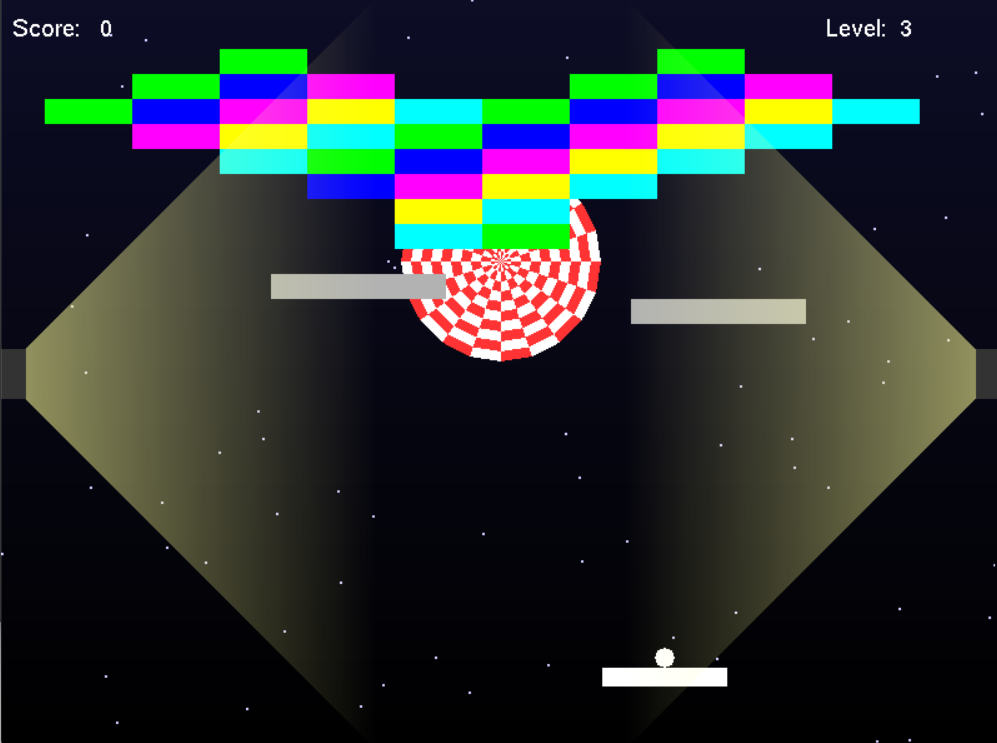

B.Sc. in Computer Science and Engineering
American International University-Bangladesh
Currently Studying
Computer Science & Engineering Student
CSE Student | AI/ML Enthusiast | Data Science & Cyber Security
I am a Computer Science and Engineering student passionate about Artificial Intelligence, Machine Learning, Data Science, Cyber Security, and Software Development. I enjoy building practical projects, exploring emerging technologies, and working on research-driven solutions to real-world problems.

Introduction
I am a Computer Science and Engineering student at American International University-Bangladesh (AIUB), in the Faculty of Science & Technology. I am developing as a software developer, an AI/ML enthusiast, and a learner who is also interested in Data Science, Cyber Security, and research.
I enjoy learning new technologies, building practical software projects, and programming. I like working with AI and data, exploring Cyber Security, conducting research, solving real-world problems, and continuously improving my technical skills.
I also have approximately two years of teaching experience, which has helped me explain academic and technical ideas more clearly. I am a project builder and a programming learner who wants to grow through practice, research, and meaningful work.
Academic background
American International University-Bangladesh
Currently Studying
Science Group
Passing Year: 2022
Science Group
Passing Year: 2020
Courses I have completed include:
What I work with
Selected work
Arduino-based smart door lock system using keypad, OLED display and relay.
Developed a desktop application using C# (.NET Framework) to manage inventory, product information, sales transactions, customer records, and billing processes for a supershop.
GitHub CodeA Java-based application designed to manage restaurant operations, including order processing, menu management, billing, and customer services.
GitHub CodeA web-based mess management system designed to help manage users and mess-related activities through a simple web interface.
GitHub CodeAn autonomous robotics project developed for an AIUB Robo Soccer Bot competition, focusing on sensor-based movement and robot control.

A 2D brick-breaker game developed using C++ and OpenGL (GLUT/freeGLUT). The player controls a paddle to bounce the ball, break bricks, and prevent the ball from falling below the paddle.
View ProjectExploration & ideas
I am interested in exploring AI-driven and data-driven solutions to real-world problems, especially in areas related to Artificial Intelligence, Machine Learning, Data Science, Cyber Security, and responsible use of AI.
Research interest / proposed research direction
This research direction explores a phishing detection system that does not always force an automated decision. When the model is uncertain about a prediction, the case can be deferred to a human analyst for further review. This approach aims to improve reliability and support safer AI-assisted cyber security decision-making.
Related concepts
Interest in using IoT technologies and intelligent systems for flood monitoring and early awareness.
Interest in AI-based approaches for early disease prediction and healthcare support.
Interest in understanding how AI coding tools affect students, programming learning, creativity, and coding practices.
Interest in ethical, transparent, reliable, and responsible use of Artificial Intelligence.
Research experience
I conducted a voluntary and anonymous survey using Google Forms with 51 participants. The survey explored:
Work & practice
Teaching Experience
Approximately 2 Years
I have approximately two years of teaching experience, helping students understand academic and technical subjects through clear explanations and practical examples.
Subjects
Technical & Project Experience
Through coursework and personal projects, I have gained hands-on experience in the following areas:
My goal is to build a strong career in Artificial Intelligence, Machine Learning, Data Science, Cyber Security, and Software Development while continuing to develop my research skills and work on meaningful real-world problems.
I am also interested in pursuing a Master's degree abroad and continuing my technical and research development.
Let's connect
If you would like to discuss a project, research idea, or academic opportunity, you can reach me using the details below.
Email shahriarh398@gmail.com Phone 01931138575 GitHub Shahriar398